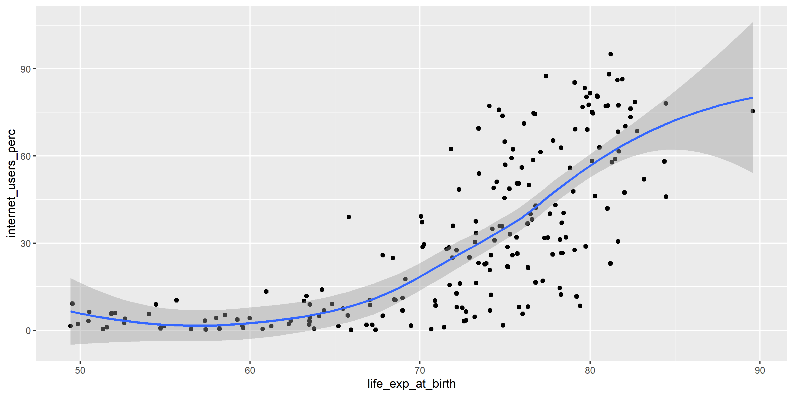

Gapminder data wrangling and
visualisation using R
Zahid Asghar
10/17/22
Agenda
- Summarising Data Chapter 2
- Discussion of various summary statistics
- How to summarize numerical and categorical data
- Introduction to R and Lab based demonstration plus HW
Why R?
- Free
- Flexible
- future-proof (sort of)
What can R do for you?
R is a popular language & platform for data science & statistical computing. It is:
- open source
- expanding (increasing capabilities through add-ons)
- able to open almost any data format
- able to scrape data from the web
- a decent tool for data wrangling
- popular in industry & academia
- pretty old (“born” 1976…)
But R also:
- is a slightly awkward language for those with programming experience has a steep learning curve
- requires a willingness to write code and use scripts (cf. Tableau & co.) is less general than Python (but a bit easier to use for advanced statistical computing)
Why R in a Social Science, Humanities, Medicine, Public Health and Public Policy setting?
R is very versatile; it can be used in a variety of settings (cf. specialized tools for specific purposes)
R is open source and free
How might you use R?
Create dataviz for teaching
Introduce as a tool for students
Your own research
Case studies
Analyze economic & demographic data
Import data into R
Clean & process the data
Create visualizations
Analyze social network data
Create and import network data
Create network visualizations & measures
If you’re new to R and/or coding, this may look like overload- But! This is a good starting point for you.
Everything I’m doing you’ll be able to reproduce on your own
Things I won’t be able to show:
Intro to the R language itself We don’t have the time, so learn by tweaking my code RMarkdown (using R to produce complete documents or slides) Text analysis in R R offers powerful packages! Links at the end of this workshop
R is a calculator
R is an object-based language
Try for yourself!
How many papers would you have to grade if you were teaching two instead of one section?
R can be extended by using one of 12,621 packages
See (https://cran.r-project.org/web/packages/)
Install packages once, load them each time
For data input/output:
Example 1: Data from the CIA World Factbook (2014), prepared by OpenIntro Statistics
Life expectancy
Try for yourself!
How is the net migration rate distributed?

Life expectancy -> more emigration?
Let’s un-clutter this:
filter(cia, net_migration_rate > 20 | net_migration_rate < -20)
## # A tibble: 6 × 11
## country area birth…¹ death…² infan…³ inter…⁴ life_…⁵ mater…⁶ net_m…⁷
## <chr> <dbl> <dbl> <dbl> <dbl> <dbl> <dbl> <dbl> <dbl>
## 1 Zimbabwe 390757 32.5 10.6 26.6 1423000 55.7 570 21.8
## 2 Syria 185180 22.8 6.51 15.8 4469000 68.4 70 -114.
## 3 Qatar 11586 9.95 1.53 6.42 563800 78.4 7 27.4
## 4 Lebanon 10400 14.8 4.95 7.98 1000000 77.2 25 83.8
## 5 Micronesi… 702 21.0 4.25 21.9 17000 72.4 100 -20.9
## 6 American … 199 22.9 4.68 8.92 NA 74.9 NA -21.6
## # … with 2 more variables: population <dbl>, population_growth_rate <dbl>,
## # and abbreviated variable names ¹birth_rate, ²death_rate,
## # ³infant_mortality_rate, ⁴internet_users, ⁵life_exp_at_birth,
## # ⁶maternal_mortality_rate, ⁷net_migration_rate
## # ℹ Use `colnames()` to see all variable namesLet’s un-clutter this:
Are the two variables related?
How does internet access vary around the world?
I could use internet_users, but the raw number is bad for comparison. So let’s divide by population:
How does internet access vary around the world?
Higher life expectancy -> more internet access?
Let’s improve this plot!
Try for yourself!
How would you plot internet access against population growth (population_growth_rate)?
Identify the outliers
filter(cia, population_growth_rate < -5 | population_growth_rate > 5)
## # A tibble: 2 × 12
## country area birth_rate death…¹ infan…² inter…³ life_…⁴ mater…⁵ net_m…⁶
## <chr> <dbl> <dbl> <dbl> <dbl> <dbl> <dbl> <dbl> <dbl>
## 1 Syria 185180 22.8 6.51 15.8 4469000 68.4 70 -114.
## 2 Lebanon 10400 14.8 4.95 7.98 1000000 77.2 25 83.8
## # … with 3 more variables: population <dbl>, population_growth_rate <dbl>,
## # internet_users_perc <dbl>, and abbreviated variable names ¹death_rate,
## # ²infant_mortality_rate, ³internet_users, ⁴life_exp_at_birth,
## # ⁵maternal_mortality_rate, ⁶net_migration_rate
## # ℹ Use `colnames()` to see all variable namesLet’s try again, w/o outliers
Visualize data on a map
First, use the built-in map tools in ggplot2:
library(ggplot2)
library(tidyverse)
worldmap <- map_data("world")
glimpse(worldmap)
## Rows: 99,338
## Columns: 6
## $ long <dbl> -69.9, -69.9, -69.9, -70.0, -70.1, -70.1, -70.0, -70.0,…
## $ lat <dbl> 12.5, 12.4, 12.4, 12.5, 12.5, 12.6, 12.6, 12.6, 12.5, 1…
## $ group <dbl> 1, 1, 1, 1, 1, 1, 1, 1, 1, 1, 2, 2, 2, 2, 2, 2, 2, 2, 2…
## $ order <int> 1, 2, 3, 4, 5, 6, 7, 8, 9, 10, 12, 13, 14, 15, 16, 17, …
## $ region <chr> "Aruba", "Aruba", "Aruba", "Aruba", "Aruba", "Aruba", "…
## $ subregion <chr> NA, NA, NA, NA, NA, NA, NA, NA, NA, NA, NA, NA, NA, NA,…Clean some country names
Join CIA and map data
iumap <- left_join(x = worldmap,
y = cia,
by = c("region" = "country"))
glimpse(iumap)
## Rows: 99,338
## Columns: 17
## $ long <dbl> -69.9, -69.9, -69.9, -70.0, -70.1, -70.1,…
## $ lat <dbl> 12.5, 12.4, 12.4, 12.5, 12.5, 12.6, 12.6,…
## $ group <dbl> 1, 1, 1, 1, 1, 1, 1, 1, 1, 1, 2, 2, 2, 2,…
## $ order <int> 1, 2, 3, 4, 5, 6, 7, 8, 9, 10, 12, 13, 14…
## $ region <chr> "Aruba", "Aruba", "Aruba", "Aruba", "Arub…
## $ subregion <chr> NA, NA, NA, NA, NA, NA, NA, NA, NA, NA, N…
## $ area <dbl> 180, 180, 180, 180, 180, 180, 180, 180, 1…
## $ birth_rate <dbl> 12.6, 12.6, 12.6, 12.6, 12.6, 12.6, 12.6,…
## $ death_rate <dbl> 8.09, 8.09, 8.09, 8.09, 8.09, 8.09, 8.09,…
## $ infant_mortality_rate <dbl> 11.7, 11.7, 11.7, 11.7, 11.7, 11.7, 11.7,…
## $ internet_users <dbl> 24000, 24000, 24000, 24000, 24000, 24000,…
## $ life_exp_at_birth <dbl> 76.3, 76.3, 76.3, 76.3, 76.3, 76.3, 76.3,…
## $ maternal_mortality_rate <dbl> NA, NA, NA, NA, NA, NA, NA, NA, NA, NA, 4…
## $ net_migration_rate <dbl> 9.04, 9.04, 9.04, 9.04, 9.04, 9.04, 9.04,…
## $ population <dbl> 110663, 110663, 110663, 110663, 110663, 1…
## $ population_growth_rate <dbl> 1.36, 1.36, 1.36, 1.36, 1.36, 1.36, 1.36,…
## $ internet_users_perc <dbl> 21.69, 21.69, 21.69, 21.69, 21.69, 21.69,…First take: a chloropleth map
Some improvements
Map projection Labels Remove Antarctica Legend placement
Some improvements
Map projection Labels Remove Antarctica Legend placement
ggplot(data = iumap, aes(x = long, y = lat, group = group)) +
geom_polygon(aes(fill = life_exp_at_birth)) +
labs(title = "Internet usage around the world",
subtitle = "% of population with internet access",
caption = "Source: CIA World Factbook",
fill = "% of population with internet access") +
coord_map(projection = "rectangular", lat0 = 0, xlim = c(-180, 180)) +
theme(legend.position = "bottom")Try for yourself:
Map migration rates around the world!

Adding locations is also easy. Let’s pick capitals…
First, I scrape location data from the web (using the “rvest” package): Google points me to http://techslides.com/list-of-countries-and-capitals…
library("rvest")
cap_url <- read_html("http://techslides.com/list-of-countries-and-capitals")
cap_nodes <- html_nodes(cap_url, "table")
cap_table <- html_table(cap_nodes[1], fill = TRUE, header = TRUE)[[1]]
glimpse(cap_table)
## Rows: 245
## Columns: 6
## $ `Country Name` <chr> "Afghanistan", "Aland Islands", "Albania", "A…
## $ `Capital Name` <chr> "Kabul", "Mariehamn", "Tirana", "Algiers", "P…
## $ `Capital Latitude` <dbl> 34.52, 60.12, 41.32, 36.75, -14.27, 42.50, -8…
## $ `Capital Longitude` <dbl> 69.18, 19.90, 19.82, 3.05, -170.70, 1.52, 13.…
## $ `Country Code` <chr> "AF", "AX", "AL", "DZ", "AS", "AD", "AO", "AI…
## $ `Continent Name` <chr> "Asia", "Europe", "Europe", "Africa", "Austra…Fixing a few country names and removing mini-states
cap_table <- mutate(cap_table,
`Country Name` = ifelse(`Country Name` == "United States", "USA", `Country Name`))
cap_table <- mutate(cap_table,
`Country Name` = ifelse(`Country Name` == "United Kingdom", "UK", `Country Name`))
cia_with_caps <- left_join(x = cia,
y = cap_table,
by = c("country" = "Country Name"))
cia_with_caps <- mutate(cia_with_caps,
no_ministates = ifelse(population >= 1000000,
1,
0))Internet access, with capitals
ggplot(data = iumap, aes(x = long, y = lat, group = group)) +
geom_polygon(aes(fill = internet_users_perc)) +
geom_point(data = filter(cia_with_caps, no_ministates == 1),
aes(x = `Capital Longitude`, y = `Capital Latitude`, group = NULL),
color = "orange", size = 1) +
labs(title = "Internet usage around the world",
subtitle = "% of population with internet access",
caption = "Source: CIA World Factbook",
fill = "% of population with internet access") +
coord_map(projection = "rectangular", lat0 = 0, xlim = c(-180, 180)) +
theme(legend.position = "bottom")Instead of building your own…
you can use some built-in mapping tools, too!
Let’s look at some economic data for the tri-state area, using the “blscrapeR” package to pull data from the API of the U.S. Bureau of Labor Statistics.
Example 2 : oscarssowhite
What do we know about diversity among Academy Award winners over time?
I use data provided by Crowdflower/FigureEight: https://data.world/crowdflower/academy-awards-demographics
##aa <- import("Data/crowdflower-academy-awards-demographics/data/oscars_demographics_dfe.csv")
aa<-read_csv("Oscars-demographics-DFE.csv")
glimpse(aa)
## Rows: 441
## Columns: 27
## $ `_unit_id` <dbl> 6.7e+08, 6.7e+08, 6.7e+08, 6.7e+0…
## $ `_golden` <lgl> FALSE, FALSE, FALSE, FALSE, FALSE…
## $ `_unit_state` <chr> "finalized", "finalized", "finali…
## $ `_trusted_judgments` <dbl> 3, 3, 3, 3, 3, 3, 3, 3, 3, 3, 3, …
## $ `_last_judgment_at` <chr> "2/10/15 3:45", "2/10/15 2:03", "…
## $ birthplace <chr> "Chisinau, Moldova", "Glasgow, Sc…
## $ `birthplace:confidence` <dbl> 1.000, 1.000, 1.000, 1.000, 1.000…
## $ date_of_birth <chr> "30-Sep-1895", "2-Feb-1886", "30-…
## $ `date_of_birth:confidence` <dbl> 1, 1, 1, 1, 1, 1, 1, 1, 1, 1, 1, …
## $ race_ethnicity <chr> "White", "White", "White", "White…
## $ `race_ethnicity:confidence` <dbl> 1, 1, 1, 1, 1, 1, 1, 1, 1, 1, 1, …
## $ religion <chr> "Na", "Na", "Na", "Na", "Roman Ca…
## $ `religion:confidence` <dbl> 1, 1, 1, 1, 1, 1, 1, 1, 1, 1, 1, …
## $ sexual_orientation <chr> "Straight", "Straight", "Straight…
## $ `sexual_orientation:confidence` <dbl> 1.000, 0.684, 1.000, 1.000, 1.000…
## $ year_of_award <dbl> 1927, 1930, 1931, 1932, 1933, 193…
## $ `year_of_award:confidence` <dbl> 1.000, 1.000, 0.667, 1.000, 1.000…
## $ award <chr> "Best Director", "Best Director",…
## $ biourl <chr> "http://www.nndb.com/people/320/0…
## $ birthplace_gold <chr> NA, NA, NA, NA, NA, NA, NA, NA, N…
## $ date_of_birth_gold <chr> NA, NA, NA, NA, NA, NA, NA, NA, N…
## $ movie <chr> "Two Arabian Knights", "The Divin…
## $ person <chr> "Lewis Milestone", "Frank Lloyd",…
## $ race_ethnicity_gold <chr> NA, NA, NA, NA, NA, NA, NA, NA, N…
## $ religion_gold <chr> NA, NA, NA, NA, NA, NA, NA, NA, N…
## $ sexual_orientation_gold <chr> NA, NA, NA, NA, NA, NA, NA, NA, N…
## $ year_of_award_gold <dbl> NA, NA, NA, NA, NA, NA, NA, NA, N…Which awards are in the dataset?
AA winners overall
AA winners over time
First, collapse the data:
AA winners over time
Then, create the plot:
More recent trends since 1960
ggplot(data = filter(aa_year, year_of_award >= 1960), aes(x = year_of_award, y = awards, fill = race_ethnicity)) +
geom_col() +
ylim(0, NA)